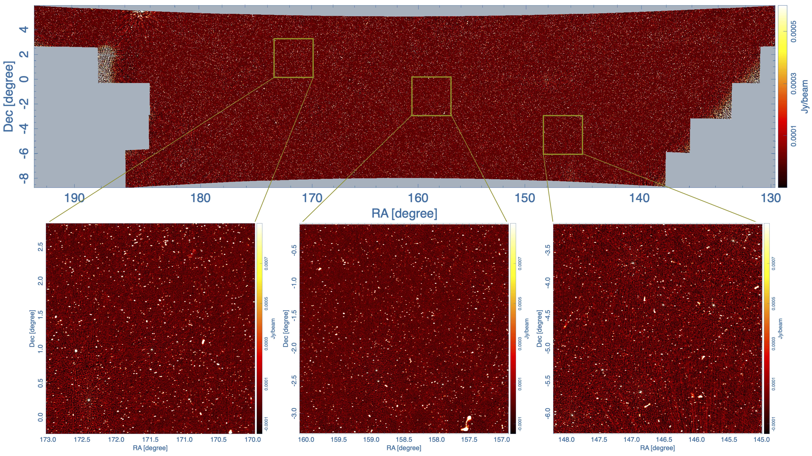
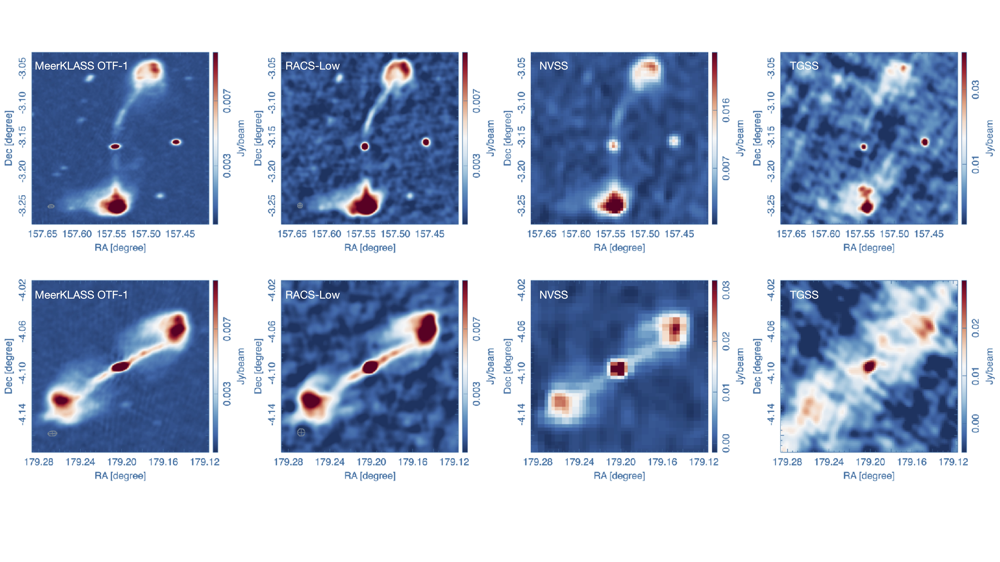
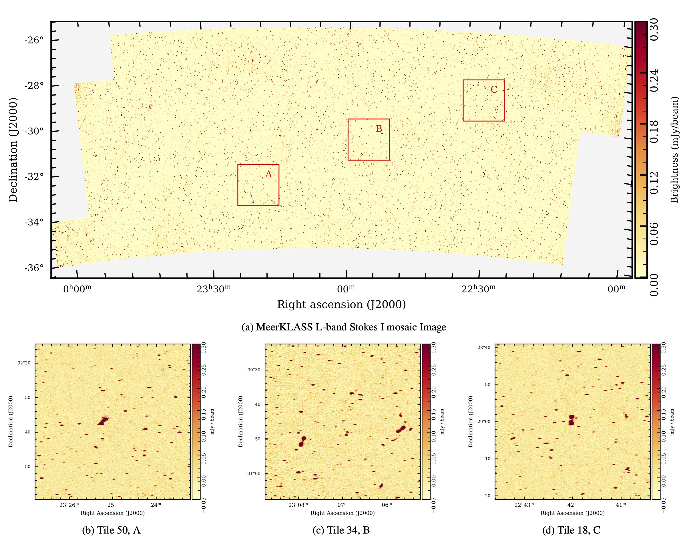

MeerKAT Large Area Synoptic Survey
MeerKAT Large Area Synoptic Survey

Fig. 1: A plot of the sky location of UHF DR1 dataset with zooms into three different sky locations (see Paul et al, Figure 4).

Fig. 2: Two giant radio galaxies observed (left to right) in MeerKLASS DR1, RACS-low, NVSS and TGSS (see Paul et al, Figure 10).
The MeerKLASS data acquisition strategy involves scanning in azimuth at fixed elevation at a scan rate of 5’/s and with a 5 to 10 degree throw, accumulating single dish and interferometric observations every 2s with 4096 channels within the selected band. During these scans, the correlator phase center is fixed to the center of the azimuthal scan, and as the Earth rotates the scan covers more sky. Over a typical 1.5hr observation epoch, a single layer of interferometric imaging is accumulated that covers ~250 deg² of sky, with calibrator observations taken before and after each scan. The 10,000 deg² MeerKLASS survey is subdivided into different sky boxes of this size. On a typical day both rising and setting scans are observed for a given survey box. In the L-band survey, 41 epochs were accumulated in a single box, and in the ongoing UHF observations 26 epochs are planned for each sky box. In DR1 we release the L-band dataset corresponding to 8 epochs or layers of imaging over a single box. For UHF we release data from multiple sky boxes where the number of epochs varies from 3 to 8. The depth and data quality of this initial data release meet or exceed those of the recently released Rapid ASKAP Continuum Survey (RACS) -low, -mid and -high.
The UHF data (544-1088 MHz) cover a region of 800 deg² of the sky near the celestial equator (see Figure 1), and the continuum imaging reaches an RMS sensitivity of 35 uJy/beam with a typical resolution of 32”x17”. The DR1 catalog contains 95,483 radio sources. Sub-band imaging is carried out at 574, 635, 695, 755, 816, 876, 937, 997 and 1058 MHz, enabling in-band characterization of the radio spectral energy distribution (SED). Cross-comparisons of astrometry, photometry and source counts to those from previous surveys indicates arcsec scale astrometric offsets from RACS-low, RACS-mid, FIRST and NVSS and 10% to 20% flux offsets from the same. Source counts are in good agreement with RACS, NVSS and Deep2 down to source fluxes of 1mJy, but suggesting a different character at the faintest fluxes as compared to the Deep2 survey. Figure 2 shows a comparison of two giant radio galaxies imaged in MeerKLASS UHF DR1 and also in RACS-low, NVSS and TGSS. The resolution and depth of the MeerKLASS UHF imaging exceeds that of the other three previous surveys. The UHF DR1 dataset is available on request and will be publicly accessible in January 2026.
The L-band data (856-1712 MHz) cover a region of 268 deg² overlapping the KiDS survey (see Figure 3) and correspond to 16 hrs of observation. The median RMS noise over this region is 33 uJy/beam with a typical angular resolution of 25.5”x7.8”. The DR1 catalog container 34,874 radio sources and sub-band imaging in 7 sub-bands. Cross-comparisons of astrometry, photometry and source counts to those from RACS-low, -mid, -high, NVSS, SUMSS and TGSS indicate arcsec scale astrometric offsets and flux scales in agreement at the 5% level. Source counts down to 700 uJy show good agreement with RACS-mid down to the faintest fluxes, and therefore lie between RACS-low and the MALS-DR1 and other ultra-deep surveys. Figure 4 contains the comparison of a giant radio galaxy observing in L-band DR1 as well as in RACS-low, -mid, -high and in NVSS and TGSS. The achieved depth and the ability to image low surface brightness features in DR1 exceed those of the comparison datasets. The L-band DR1 dataset is available on request and will be publicly accessible in January 2026.

Fig.3: A plot of the sky location of the L-band DR1 dataset with zooms into three different sky locations (see Mangla et al, Figure 3).

Fig.4: Images of a particular giant radio galaxy in MeerKLASS L, NVSS, TGSS-ADR and RACS-low, -mid and -high (see Mangla et al Figure 6).